Un cop entrades totes les dades podem prémer el botó de previsualitzar, per veure com quedaran les dades, o el botó Envieu, per guardar les dades definitivament.
Important: Si feu un previsualitzar, assegureu-se de fer un envieu per guardar les dades després!!.
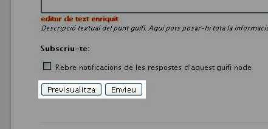
Després de prémer el botó Envieu, se'ns obrirà la pàgina informació
del node, on es mostren les dades del nostre node, la situació geogràfica i els trastos que té associat.
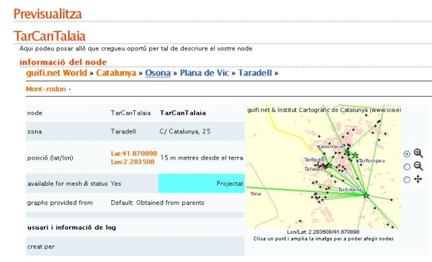
Un trasto no és res més que la informació del router. A cada node i poden haver
varis trastos, però per poder connectar-nos a la xarxa guifi.net només ens fa
falta un trasto (el router que hem comprat), el qual enllaçarà amb el punt
d'accés que tinguem més aprop. Per poder donar d'alta el trasto premem el botó
d'afegeix que hi ha a l'apartat de trastos.
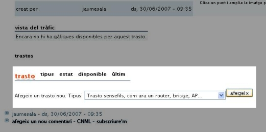
Un cop dins se'ns presenta la pàgina afegint un nou trasto a
<nom-del-node>, on haurem d'omplir les dades que se'ns demanen.
- Nom curt: El nom que li volem posar al trasto.
- Contacte: El correu electrònic de la persona que s'encarrega del trasto.
- Estat: Estat en que es troba el trasto (ara podem posar PROJECTAT, més
endavant ja canviarem l'estat).
- Marca i model: La marca i model de router (En aquest cas es tracta d'un
router BUFFALO i el model és el WHR-G54S).
- Firmware: El tipus de firmware que hi posarem (En aquest cas posarem el
firmware DD-GUFI, que està basat en el DD-WRT).
- Adreça MAC del trasto: El número identificatiu de l'adreça MAC del nostre
router (habitualment en un adhesiu que es troba a la carcasa del router).
- Comentaris: si es vol posar alguna informació concreta del router...
Un cop plena tota la informació premem el botó Guardar i continuar
editant.
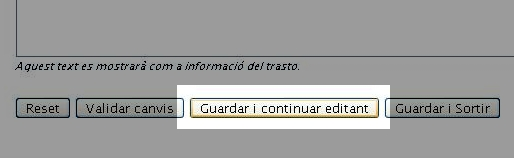
Ara se'ns presenta la mateixa pàgina però amb unes opcions més per a editar.
Aquestes opcions són les de la ràdio. Una ràdio no és res més que l'interfície
wireless del nostre router, és a dir, la informació de l'antena que té el nostre
aparell. Per poder afegir una ràdio premem al botó afegeix una ràdio.
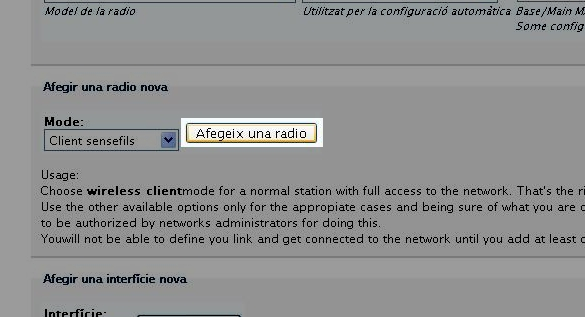
Veureu que apareix una línia amb tot d'informació. Això no és res més que la
descripció de l'antena que té el nostre router. No us estranyi que l'adreça MAC
que apareix a la ràdio sigui diferent a la que heu entrat abans. Aquesta adreça
MAC és la de l'antena del vostre router (MAC del trasto + 2).
Informatiu:Un router sol tenir dos adreces MAC, una és la que controla
tots els ports que té per cable i l'altre és la que controla la connexió
inal·làmbrica. Al ser dos medis diferents es necessiten dos identificadors
diferents.
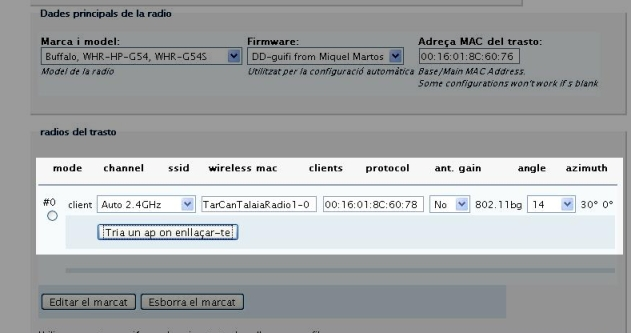
Ara el que hem de fer és indicar amb quin punt d'accés (AP) volem enllaçar-nos.
Per això premem el botó tria un AP on enllaçar-te.
Aquí triarem el punt d'accés que anteriorment hem vist que era el que tenia
millors valorsde RSSI i NOISE per conectar-se a la xarxa Guifi.net. En el nostre
cas es tracta de "TaradellRadioAP".
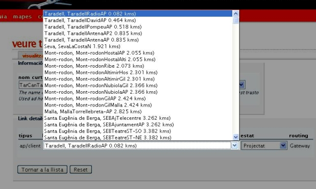
Un cop seleccionat premem tornar a la llista. Ara tornem a ser a
la pàgina anterior, però ara el nostre ràdio ja té assignat un punt d'accés.
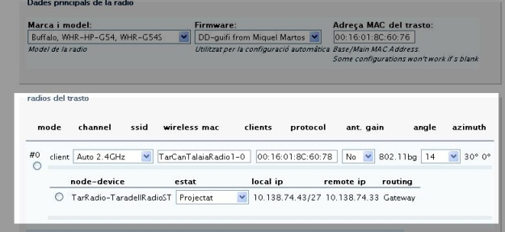
Per acabar premem el botó guardar i sortir, que ens portarà a la
pàgina del nostre trasto.
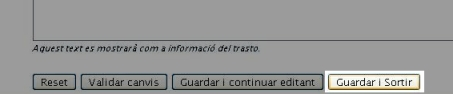
L'últim pas que ens queda és el de l'unsolclic. L'unsolclic no és res més que un
arxiu que ens genera la pàgina de guifi.net, per poder configurar el nostre
router automàticament (Així no ens haurem d'estar barallant amb les pàgines de
configuració del router durant hores... :P ).
Per poder generar l'unsolclic premem el botó que posa unsolclic de
la part superior de la pàgina.
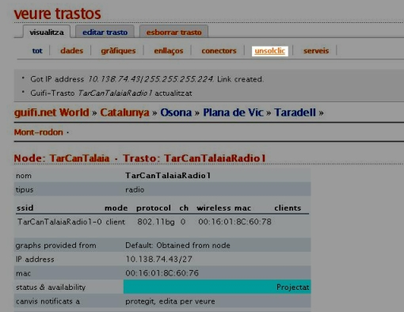
Ja el tenim!!, ara només fa falta guardar aquestes dades per poder-les utilitzar
en el següent pas.
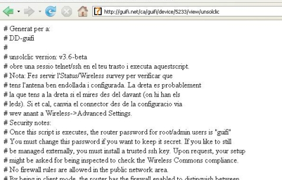
Per això seleccionem tot el contingut de la pàgina, el copiem
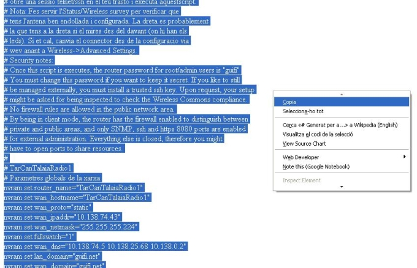
i finalment el guardem en un arxiu de text.
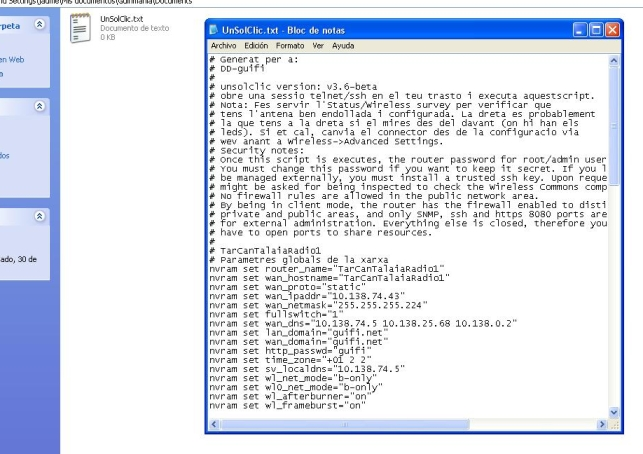
Ja està!!!! El pròxim pas serà passar l'UnSolClic al nostre router per deixar-lo
configurat correctament per connectar-nos a la xarxa Guifi.net.
Què hem vist
En aquest fragment de la guia hem après a:
- Donar d'alta un usuari a la pàgina de guifi.net.
- També hem après a donar d'alta un nou node i la ràdio que ens servei per
enllaçar-nos a la xarxa de guifi.net.
- Per últim hem vist com generar l'unsolclic, el qual ens servirà per
configurar el nostre router en el pròxim pas.